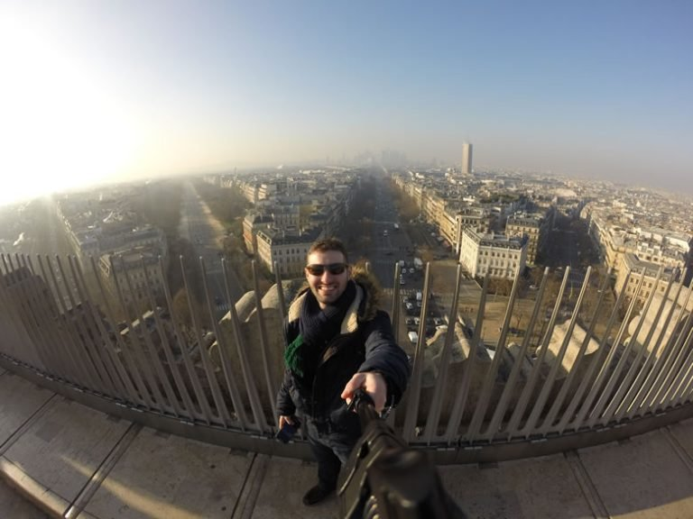
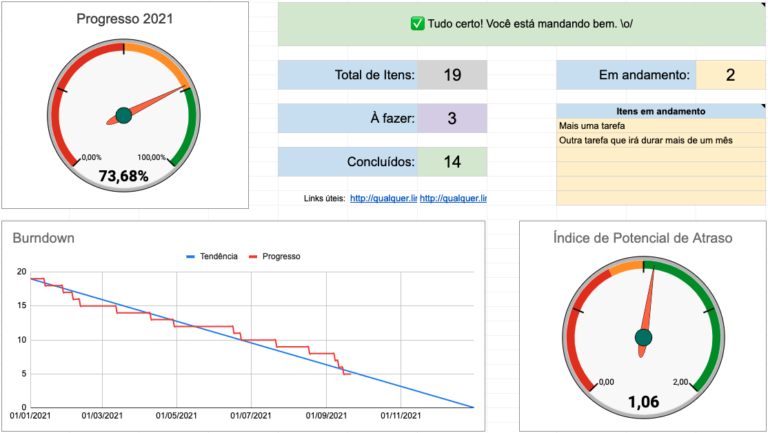

Oi, eu sou o Gui.
Este é o meu caderno: histórias, metas, idiomas, viagens e os apps que eu construo, colados aqui desde 2015.

Quem escreve aqui
- Mineiro de Ipatinga
- Engenheiro front-end
- Marido da Joice
- Papai da Elisa
- Bateria, forró e surfe
Coisas que eu construí
Ver todos os appsVida
Histórias, metas, viagens e as presepadas da vida.
Gestão de tempo

Um turbo para metas pessoais
Mais recente
Um turbo para metas pessoais
Depois de falhar bastante com metas pessoais, resolvi criar uma ferramenta para me gerenciar melhor, e tem funcionado bem.
Ler agora


Tech
Código, front-end e as ferramentas que eu construo.
Ferramentas
// já devia ter acabado?
const pace = spent / plan();
if (pace > 1.1) {
warn("Vai atrasar");
}
Mais recente
Como o Tymebox sabe que sua reunião vai atrasar
O cronômetro compara o seu ritmo com o plano em tempo real. Conto como fiz essa conta e por que ela mudou minhas reuniões.
Ler agoraReact
const d = useDialog("share");
return (
<Button onClick={d.open}>
Compartilhar
</Button>
);:root {
color-scheme: light dark;
--accent: light-dark(
#527752,
#a5c5a5
);
}# config/importmap.rb
pin "application"
pin "@hotwired/turbo"
pin_all_from "app/js",
under: "controllers"# atalhos que uso todo dia
alias gs="git status -sb"
alias dev="bin/dev"
mkcd() {
mkdir -p "$1" && cd "$1"
}Do blog
Folhear todos os posts
Gestão de tempoUm turbo para metas pessoais
Mais recente
Um turbo para metas pessoais
Depois de falhar bastante com metas pessoais, resolvi criar uma ferramenta para me gerenciar melhor, e tem funcionado bem.
Ler agoraSobre o que eu escrevo
Escolhe um assunto e puxa o adesivo. Quanto maior, mais eu já escrevi sobre ele.